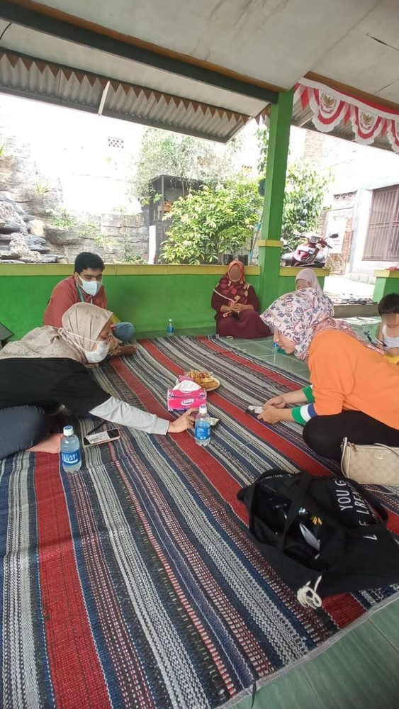
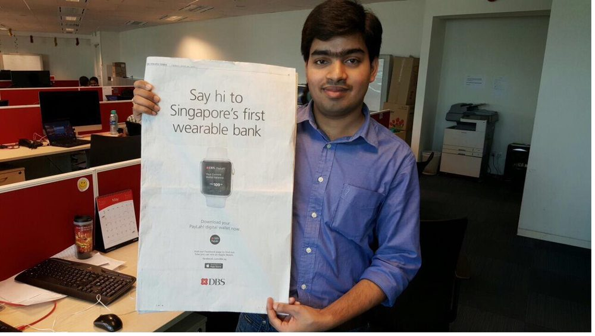

My story
My first resume took me a week when friends filled a template in an afternoon, because I wanted to own every word and stand behind each line. When they later asked me to review theirs, I didn't rewrite them, I asked questions, and their own answers made them better, the instinct I still work from.
At , I joined as lead PM to build a social app for Mapan, the unit serving women resellers across smaller-city Indonesia who earn a living selling to their neighbours, and that mission is why I came. Through a reorg I became head of product and design, hired a new team, and reshaped how product, design, research, and engineering worked together. We tripled revenue in eighteen months and built the full social app, feed, connections, and ranking.

At DBS in Singapore I found my footing in product. Back in 2014, when few wallets existed, I saw what could be when others doubted it, and built its referral engine into production myself, every edge case, money flow, and unclaimed reward. That engine helped PayLah reach half a million users, and I grew the team to twelve and built out its merchant-payments side.

By 2016 I was building with NLP, the heart of today's AI, before most banks were. As the SME on one of the region’s first , I worked with Kasisto's engine to get it understanding how real people phrase things, the same request arriving as “transaction” or “TXN”. We took it to production inside a bank, clearing the security, compliance, and risk bar when none of it was charted.
I work backwards from the outcome, through every perspective that gets us there.
Then AI made building almost free. Anyone can ship now. So the two things I had spent fifteen years on became the two that matter most: deciding what is worth building, and building it right. That is what I do for founders and teams, and what I build into my own products: tools that ask the right questions, so you sharpen your own thinking rather than have it done for you.
My first resume took me a week, when friends filled a template in an afternoon. I wanted to own every word and stand behind each line. It was an expression of who I am. When friends later asked me to review theirs, I didn't rewrite them, I asked questions, and their own answers made the resumes better. That instinct, helping people sharpen their own thinking rather than doing it for them, stayed with me. The idea to build it into a tool came much later.
I started as an engineer at Kony, now part of Temenos, building Citibank's mobile app for Russia. The business team wanted instant in-app language switching from day one, but the platform couldn't do it. Rather than pass that back, I worked out a hack by understanding how the platform actually worked, because switching without closing the app was the experience users deserved. That mix, thinking from the user's side and driving to the outcome, has been who I am ever since.
DBS in Singapore is where I found my footing in product, given room to move from developer to tech lead to subject-matter expert across PayLah, Lifestyle, and the bank's chatbot, each step pulling me closer to product. was one others doubted; back in 2014, when few wallets existed, I saw the wallet and the pain it could solve, and built its $5-promotion referral engine into production myself, the edge cases, the money flow, the unclaimed rewards. That engine helped PayLah reach half a million users. I built out its merchant-payments side too, grew the team to twelve with another lead, and ran a hackathon at NTU Singapore.
That earned more trust at DBS. I handed PayLah to a co-lead and moved to the Lifestyle app as its SME, a new product built around instant rewards. Working across ten teams, I shaped a five-million-dollar estimate, pitched it to the managing director, and de-risked the MVP launch in nine months. DBS has since merged PayLah and Lifestyle into one app, I worked on both from their first versions.
In 2016 and 2017, I was building with NLP, the heart of today's AI, before most banks were. As the SME on the bank’s , one of the first in the region, I worked with Kasisto's engine and the business to get it understanding how real users actually phrase things, the same request arriving as "transaction" or "TXN". We took it to production inside a bank, clearing the security, compliance, and risk bar when none of that was charted.
At Citi, as AVP for fintech product, I owned authorisation and privacy on an API and partnership programme bringing banking into partner sites across APAC and EMEA, designing the product architecture so the strict EMEA rules lived inside one global product without burdening other markets.
As a senior PM at , on the Paytm joint venture, I helped two PMs reuse Ant's platform to ship faster, and we cut churn by a third by fixing what actually made people leave.
At , I was brought in as lead PM to build a social app for Mapan, the business unit serving women resellers in tier-2 and tier-3 Indonesia, who earn a living selling to their neighbours. That mission is why I joined. Through a reorg, I took over as head of product and design, hired a new product team, and reshaped how product, design, research, and engineering worked together. We tripled revenue in eighteen months, built the full social app, feed, connections, ranking, and experimented with new business models to reach adjacent users.
I work backwards from the outcome, through every perspective that gets us there.
Then AI made building almost free. Anyone can ship now. So the two things I had spent fifteen years on became the two that matter most: deciding what is worth building, and building it right. That is what I do for founders and teams, and what I build into my own products: tools that ask the right questions, so you sharpen your own thinking rather than have it done for you.